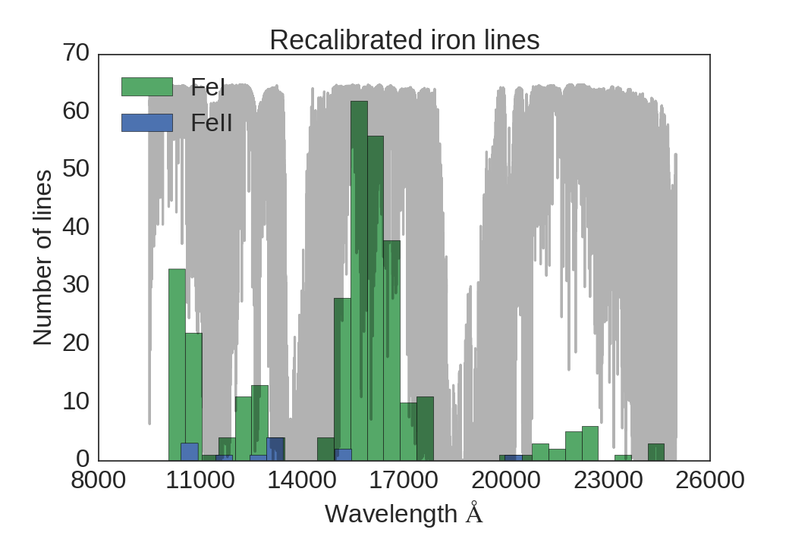

Determination of stellar parameters for M-dwarf stars
The NIR approach
Daniel T. Andreasen
daniel.andreasen@astro.up.pt
Introduction
Importance of stellar atmospheric parameters
- Effective temperature
- Surface gravity
- Metallicity
- Micro turbulence
Derived parameters from models
- Mass
- Radius
- Age
- Luminosity
Usage
- Exoplanetary science
- Stellar astrophysics
- Galactic population
The method - The EW method
- Measure EW of absorption lines
- Calculate abundances with a tool like MOOG
- Remove correlations between by changing atmosphere model:
- Abundances vs. EP (Teff)
- Abundances vs. reduced EW (micro turbulence)
- Abundance for FeI should equal abundance for FeII (logg)
- [Fe/H] when above is satisfied
Technicallities
319 FeI lines, and 12 FeII lines calibrated for the Sun

Results: The Sun
- Full list -> perfect agreement
- Add noise for different S/N
- $$\frac{1}{\sqrt{2\pi\sigma}}e^{-\frac{(x-EW)^2}{2\sigma^2}}$$
- $$\sigma = 1.6\frac{\sqrt{\Delta\lambda\; EW}}{S/N}$$
- Cut in EP (5.5, 5.0, and no cut)